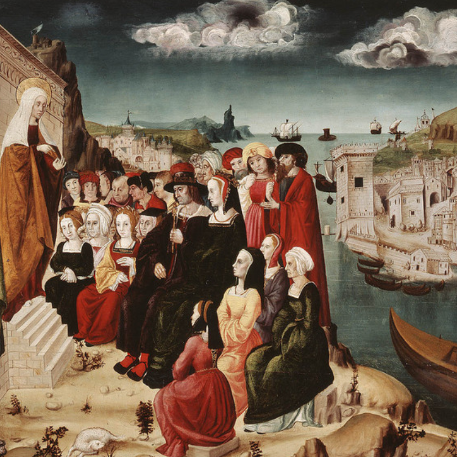
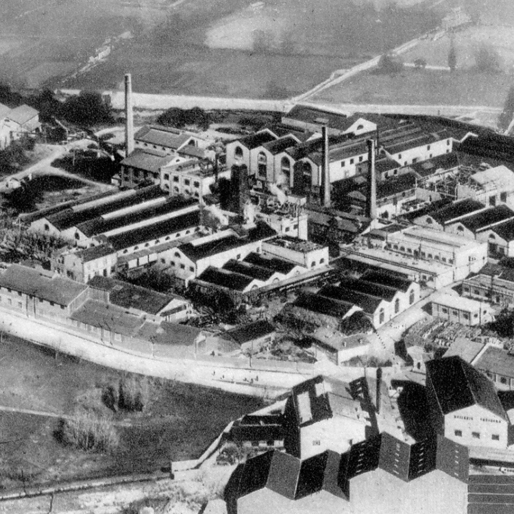

LA GRECE ANTIQUE
Pendant la Grèce antique, Marseille, connue alors sous le nom de
Massalia, était un port grec fondé par des marins originaires de Phocée,
une cité ionienne située sur la côte ouest de l'actuelle Turquie.
La fondation de Massalia remonte au VIe siècle avant notre ère,
vers 600 av. J.-C. Ces colons grecs cherchaient à établir des colonies
commerciales le long de la Méditerranée occidentale, et Massalia devint
rapidement un centre commercial prospère.
La ville bénéficiait d'une position stratégique, facilitant les
échanges commerciaux avec d'autres cultures méditerranéennes,
notamment les Étrusques, les Ligures et les Celtes.
Au fil du temps, Massalia a développé des relations complexes avec
les peuples autochtones de la région, notamment les Ligures et
les Celto-Ligures. La ville a prospéré en tant que centre économique,
attirant des commerçants et des voyageurs de diverses origines.
Les Grecs de Massalia ont également eu des interactions avec les
puissances méditerranéennes telles que Carthage et Rome.
Cependant, au cours de l'histoire, Marseille a traversé des périodes
d'instabilité, notamment pendant les guerres puniques entre Rome et
Carthage.
L'histoire de Marseille pendant la Grèce antique témoigne de sa
richesse culturelle et de son importance en tant que carrefour
commercial méditerranéen.
LE MOYEN-AGE
À l'époque médiévale, Marseille a traversé des périodes de profonds bouleversements, façonnant son destin de manière significative. À la suite des mouvements migratoires des peuples germaniques et des invasions barbares, la ville a été le théâtre de changements politiques majeurs. Conquise par les Sarrasins au VIIIe siècle, Marseille a vécu sous leur domination jusqu'au Xe siècle, avant d'être libérée par les forces du Saint-Empire romain germanique en 961.
Ce n'est qu'après cette libération que Marseille a émergé en tant que république maritime indépendante. Les siècles qui ont suivi ont été marqués par un renouveau économique, la ville devenant un centre commercial prospère avec des liens étroits avec l'Orient. Les échanges commerciaux ont stimulé la croissance de la cité et ont contribué à façonner son identité unique au sein du contexte médiéval. Ainsi, Marseille a connu une trajectoire complexe et dynamique au cours du Moyen Âge, illustrant sa capacité à s'adapter aux défis et à prospérer dans des circonstances changeantes.
LA REVOLUTION
Durant la Révolution française, Marseille a été le théâtre d'événements majeurs et a joué un rôle significatif dans les tumultes de cette époque. La ville, initialement réticente aux idées révolutionnaires, a finalement été entraînée dans le mouvement de changement radical qui a balayé la France à la fin du XVIIIe siècle. En 1792, Marseille s'est ralliée à la Révolution, accueillant avec enthousiasme les idéaux de liberté, d'égalité et de fraternité.
Cependant, la ville a également été le théâtre de tensions politiques, notamment avec la résistance contre les réformes imposées par le gouvernement révolutionnaire. Un événement marquant a été la prise des Tuileries à Paris en 1792, au cours de laquelle des Marseillais, formant la "Légion des volontaires marseillais", ont participé activement. Cela a conduit à la célèbre "Marseillaise", l'hymne national français, inspirée par leur marche vers Paris. Néanmoins, Marseille a également connu des moments de contestation, notamment lors des soulèvements fédéralistes de 1793. Ainsi, pendant la Révolution française, Marseille a oscillé entre adhésion aux idéaux républicains et tensions internes, reflétant la complexité de cette période historique.
L'INDUSTRIALISATION
Au cours de l'ère de l'industrialisation, Marseille a subi une métamorphose significative, évoluant d'un port traditionnel en une métropole industrielle dynamique. Le XIXe siècle a vu le port de Marseille s'affirmer comme un acteur majeur du commerce méditerranéen, favorisant l'essor économique de la région. Les activités portuaires ont été revitalisées par la croissance du commerce maritime et l'expansion des réseaux ferroviaires, positionnant la ville comme un pivot essentiel dans les échanges internationaux.
Cette transformation a également engendré une urbanisation rapide, caractérisée par l'émergence de quartiers industriels et une augmentation significative de la population citadine. Les secteurs industriels tels que les chantiers navals, les industries textiles et la fabrication de savon ont prospéré, attirant une main-d'œuvre diversifiée venue des régions rurales à la recherche d'opportunités dans les nouvelles usines. Cependant, cette ère n'a pas été exempte de tensions sociales, avec des conditions de travail difficiles et des conflits entre les travailleurs et les propriétaires d'usines. Malgré ces défis, l'industrialisation a laissé une empreinte indélébile sur Marseille, transformant la ville en un centre économique moderne et en pleine expansion au cœur de la Méditerranée.
